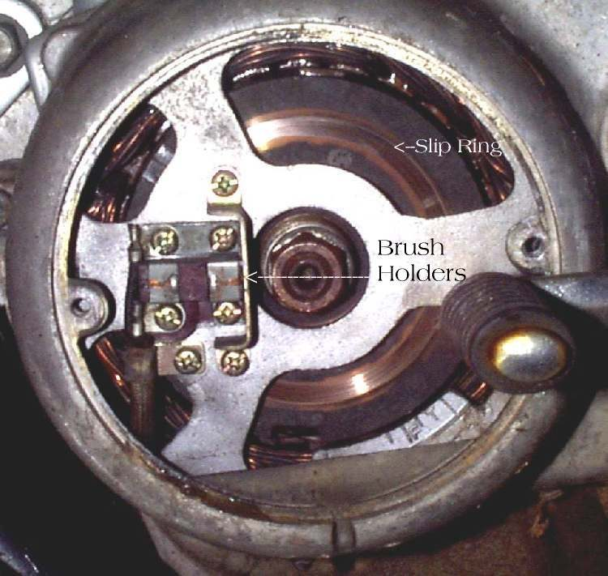
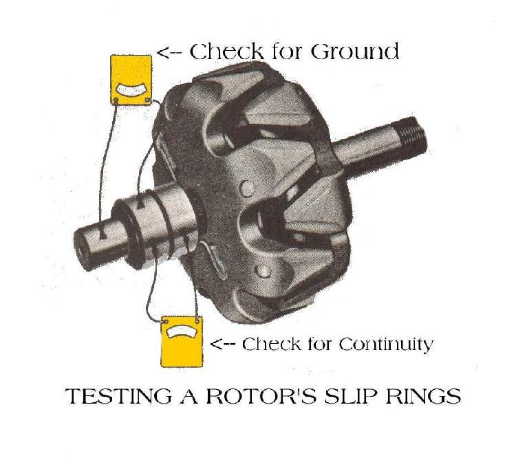
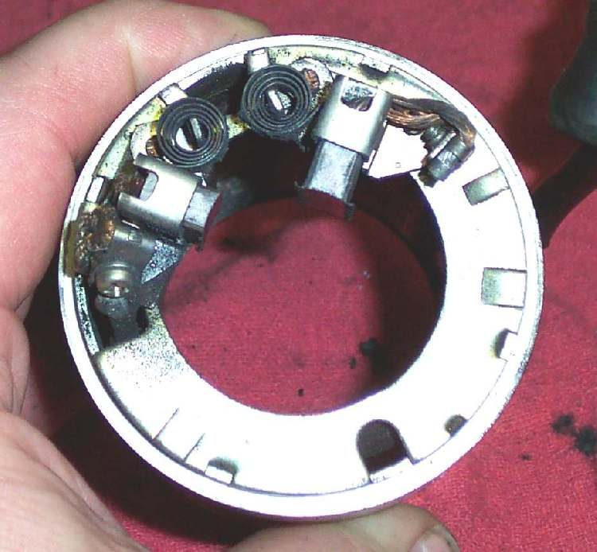
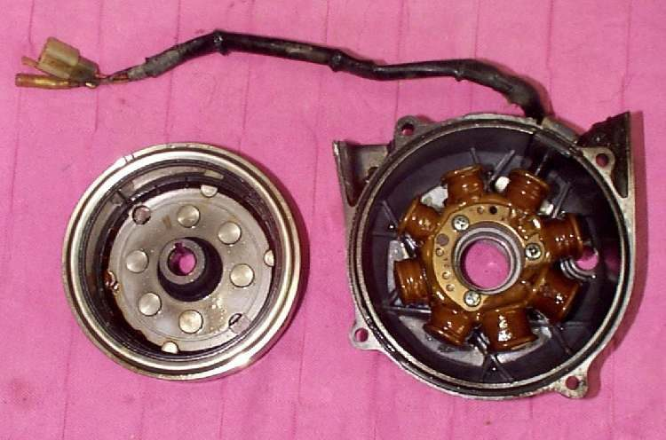

Most bikes make charging current with magnets on the flywheel. Some older bikes use a different design: a wound rotor (a coil on a shaft) that spins inside a stator, fed through two slip rings and carbon brushes. Some old starter-generators work on the same plan, with a commutator in place of slip rings. This page shows how to test the rotor and the brushes with an ohmmeter.
Safety
- Switch the ignition off and disconnect the battery before you open the charging cover.
- Handle brushes with care. They break easily.
- Keep your fingers clear of the rotor if the engine can turn.
You need
- A multimeter set to ohms.
- Fine sandpaper.
- The manual for your bike. Slip ring rotors vary, so use the values in your manual.
Steps
- Remove the cover over the rotor and brush holder. Look for oil, dust, wear and burnt marks.
- Find the two slip rings on the rotor. They sit on the nose or the side of the rotor, separated by insulation.
- Put the meter leads on the two slip rings. There should be continuity, a low reading, between them.
- Put one lead on a slip ring and the other on the rotor body or shaft. There should be no continuity. A reading here means the rotor winding is earthed.
- If the rotor has a commutator, as a starter-generator does, test it the same way: continuity between segments, none to the shaft.
- A slightly dull or dirty ring or commutator can be polished with fine sandpaper. Clean off all dust afterwards.
- Check the brushes. They must slide freely in their holders and be long enough to touch the slip rings at all times.
- Compare brush length with your manual. If you cannot get an exact replacement, a workshop can fit a larger brush cut to size.
- Check that the brush springs push each brush firmly onto the ring.
- Refit the cover and recheck charging voltage. See Test the charging system.
How to tell
| Finding | Likely cause | Fix |
|---|---|---|
| OL between slip rings | Open rotor winding | Replace the rotor |
| Reading from ring to shaft | Earthed winding | Replace the rotor |
| Brushes short or stuck | Wear or dirt | Replace or free the brushes |
| Rings burnt or rough | Arcing from poor contact | Polish lightly, then check brush spring |
Check your work
- Both rings read continuity to each other and none to earth.
- Brushes move freely and press on the rings.
- Charging voltage now rises when the engine runs.
If it did not fix the problem
- Check the stator coils with Test the stator (generator coils).
- Check the regulator with Test the regulator rectifier.
- See Battery is not charging while riding.
- A rotor that fails the tests needs a workshop or a rebuilt part.